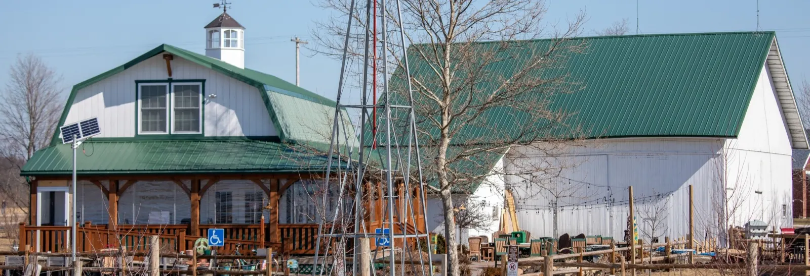

About
About

In the middle of nowhere, there’s a where.
— Kaja, describing The Mockingbird on Mill Road
The Mockingbird is a country wine café and music venue on Mill Road, made for finding your next favorite.
Explore 20 wines by the glass, listed sweet to dry, and a bottle shop with a little help choosing. Find live music and a country setting made for time together.
Our scratch-made food brings cheese and charcuterie boards, homemade flatbreads, pressed sandwiches and soup to the table. Choose a night from the calendar and make it yours.
Why “Mill Road”?
Mill Road is the little drive you turn onto from Elliston-Trowbridge Road. Long before the wine and the music, it led to an old mill. Look for our sign at 4408 N. Elliston-Trowbridge Rd. and follow the drive in.
And the mockingbird?
It’s real. Our resident mockingbird gave the place its name, and on most days you’ll hear it singing somewhere on the property.